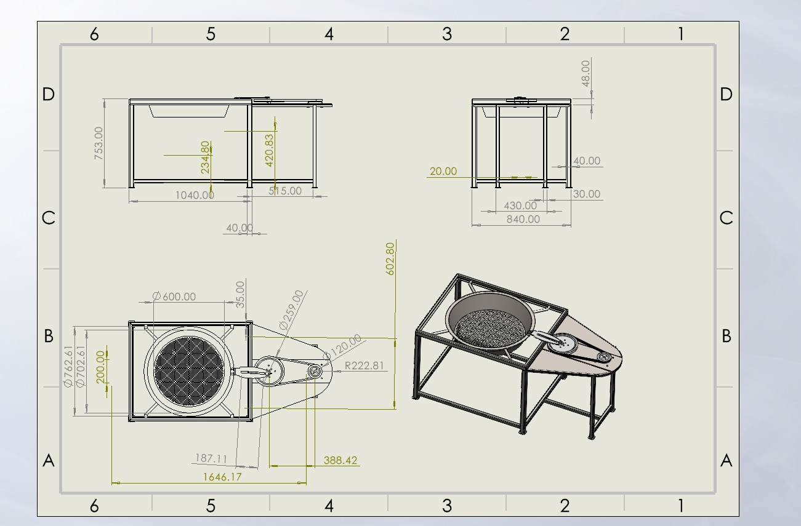
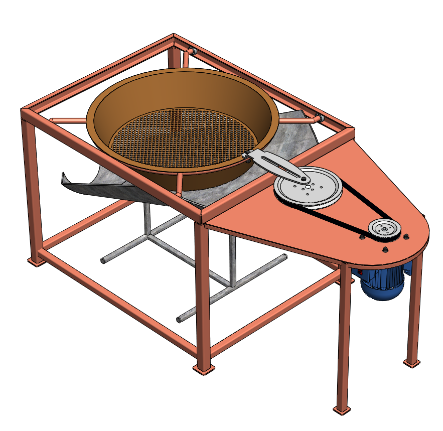

2D Engineering Drawing
Orthographic multi-view drawing highlighting exact dimensions (Height: 753.00 mm, Length: 1040.00 mm).
An advanced automated mechanical system engineered for rapid, high-volume sand screening in construction, minimizing manual effort and maximizing throughput.
Explore CAD DesignsTraditional manual sand sieving using handheld wire mesh screens is extremely labor-intensive, slow, and induces severe physical fatigue (such as lower back strain and muscular stress) among construction workers. Furthermore, it fails to meet large-scale project demands.
This project presents a motorized mechanical screening device fully designed via SolidWorks. Utilizing an electric motor, V-belt drive transmission, and an inclined rotating drum sieve, it efficiently separates fine aggregates from coarse debris continuously.
Electric motor and pulleys are configured to overcome aggregate friction and rotation resistance across a 600 mm diameter drum.
Rotary trommel design offers continuous feeding, self-clearing action, and compact structure (1040 mm length) ideal for site mobility.
V-belt drive reduces high motor RPM to optimum drum rotation speed, preventing aggregate clogging and ensuring smooth throughput.
| Parameter | Specification Details |
|---|---|
| Total Height | 753.00 mm |
| Base Frame Length | 1040.00 mm |
| Sieve Drum Diameter | 600.00 mm |
| Drive System | Electric Motor, Pulley & V-Belt Transmission |
| Material Construction | Mild Steel Profiles & Sheet Metal |

Orthographic multi-view drawing highlighting exact dimensions (Height: 753.00 mm, Length: 1040.00 mm).

SolidWorks 3D model illustrating structural layout, motor mounts, V-belt drive, drum sieve, and discharge chute.
Accurate measurement and cutting of mild steel box sections and metal sheets based on CAD dimensions.
Robust arc welding procedures applied to construct a rigid, vibration-resistant support chassis.
Surface priming, anti-corrosive painting, component alignment, and test runs for operational verification.